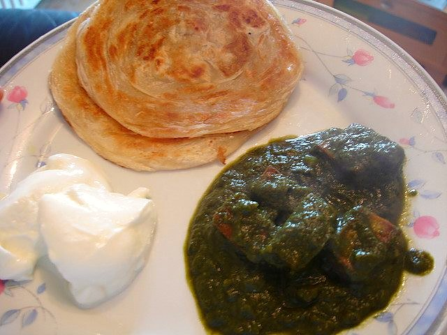

Ulte Tawe Ka Paratha
wafer-thin layered paratha cooked on the back of an upturned tawa

Contains: milk, gluten
Ingredients
Quantities for 4.
- 300g Maida
- 100g Attaa little wholemeal gives the paratha some backbone
- 150ml, warm Milk
- 100ml, warm, approximately Water
- 6 tbsp, melted, plus more for cooking Ghee
- 1 tsp Sugaroptional
- 1 tsp Salt
Cookware
tawa, stovetop
Checked against the ingredient list for ten allergens: milk, egg, fish, crustaceans, tree nuts, peanuts, sesame, mustard, soy and gluten. Brands vary, so read the label on anything new to you.
Before you start
- The dough needs 45 minutes covered at room temperature. Unrested dough will not roll thin enough and springs back.
- You need an upturned kadhai or a heavy iron tawa turned convex side up. The curve is what lets the bread drape and cook evenly.
- Melt the ghee for laminating and keep it liquid but not hot beside your rolling board.
Method
- Mix the maida, atta, salt and sugar, rub in 2 tbsp of the melted ghee, then bring together with the warm milk and enough warm water to make a soft dough.
- Knead 10 minutes until smooth and elastic, then cover with a damp cloth and rest 45 minutes.Ten minutes of kneading is what builds the stretch. Under-kneaded dough tears when you roll it thin.
- Divide into 8 and roll one ball into a 20cm disc.
- Brush it all over with melted ghee, dust lightly with dry maida, then cut a slit from centre to edge and roll it tightly into a cone.Ghee then flour, in that order. That pairing is what separates the layers.
- Press the cone down onto its point into a flat pastry and rest 10 minutes. Repeat with the rest.
- Roll each pastry out to a very thin disc, 22–24cm across, working from the centre outwards.Light pressure and lots of small strokes. Leaning on the pin squashes the layers together.
- Set the tawa upside down over medium heat and let it get properly hot, 4 minutes.
- Drape a paratha over the convex surface and cook 60–90 seconds until the underside is spotted brown and it lifts freely.
- Flip with tongs, brush with ghee and cook 60 seconds more, pressing the edges down onto the metal.
- Crush the hot paratha lightly between your palms to open the layers and serve at once with galouti or korma.That crumpling is the point of the whole exercise. Do it while it is too hot to be comfortable.
Storage
Best within minutes of cooking. The rolled, un-cooked pastries keep a day refrigerated between sheets of paper. Cooked parathas go leathery in the fridge; refresh on a hot tawa with a little ghee.
Nutrition Good estimate
Medium protein: 11 g a serving, 8% of the calories
| Per serving185 g | Per 100 g | |
|---|---|---|
| Calories | 552 kcal | 298 kcal |
| Protein | 11.4 g | 6 g |
| Carbohydrate | 78.7 g | 42 g |
| of which sugars | 3.5 g | 2 g |
| Fibre | 5.3 g | 3 g |
| Fat | 21.6 g | 12 g |
| of which saturated | 12.8 g | 7 g |
| of which unsaturated | 7.4 g | 4 g |
Estimated from raw ingredients using USDA FoodData Central.
More like this: Vegetarian Indian recipes · No onion no garlic recipes · Awadhi/Lucknowi recipes
Times, yields, allergens and nutrition are guidance. Use your own judgement on doneness and on storing. More in About.